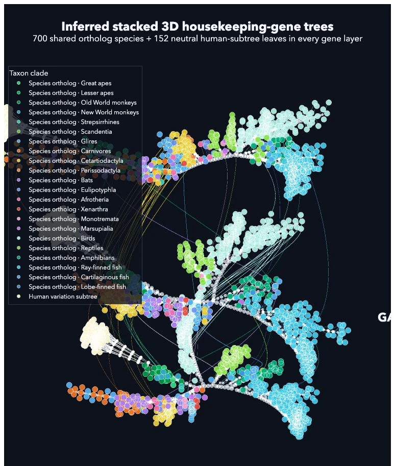

Scientific visual art · 2026
Darwin's Gene Memories
This piece lifts Darwin's tree of life into space and splits it into three transparent layers. Each layer follows one gene, a small instruction inside living cells, shared by many species because life needs it for basic work.

Genes are tiny instructions carried by living things. Some genes are so basic that many species share versions of them. Here, three of those genes become three independent evolutionary trees. Each layer includes 700 shared ortholog species and 152 human-variation leaves. The outer points represent species or human genetic variants. The inner meeting points are inferred ancestors.
The lines between layers show where the same species group is carried across separate gene histories. That is why the work is not just one flat tree: it shows where evolution repeats a story, where it changes the story, and where different genes remember ancestry in different ways.
Interactive study